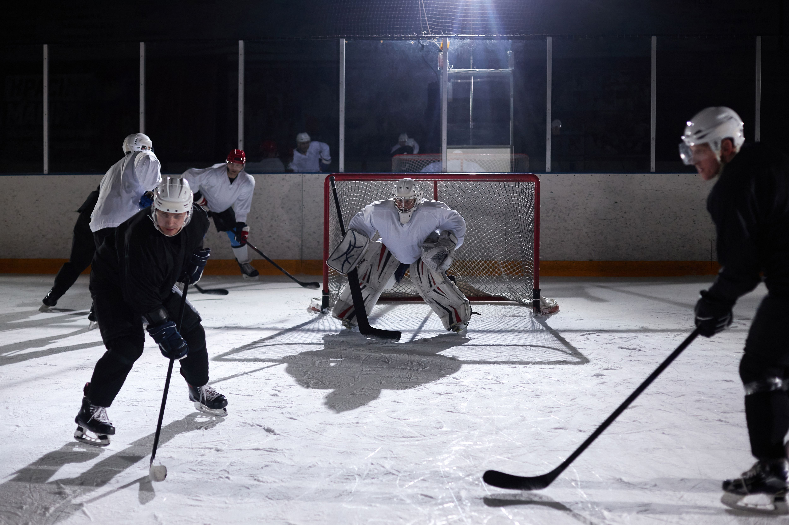
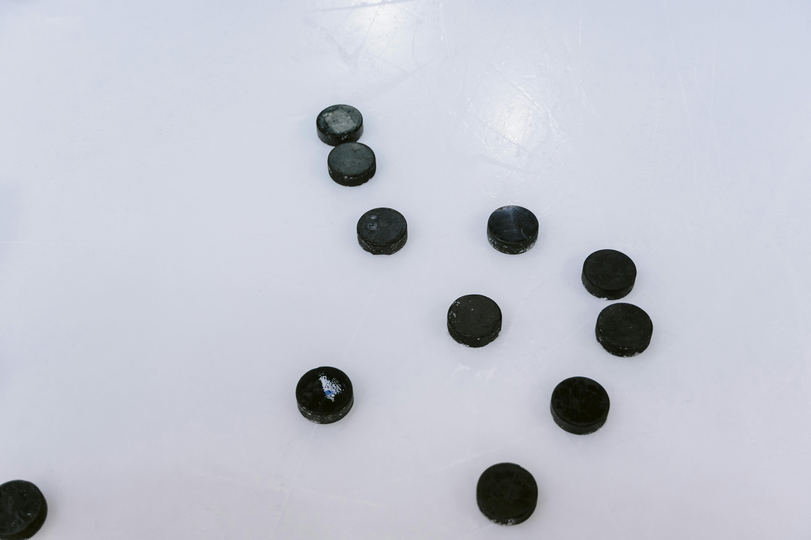
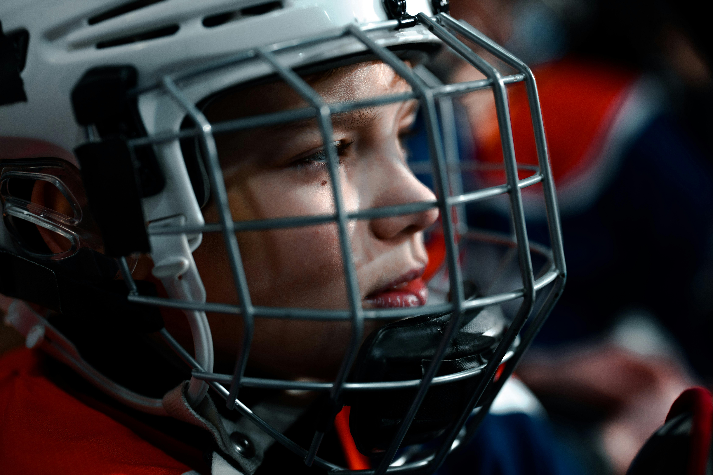
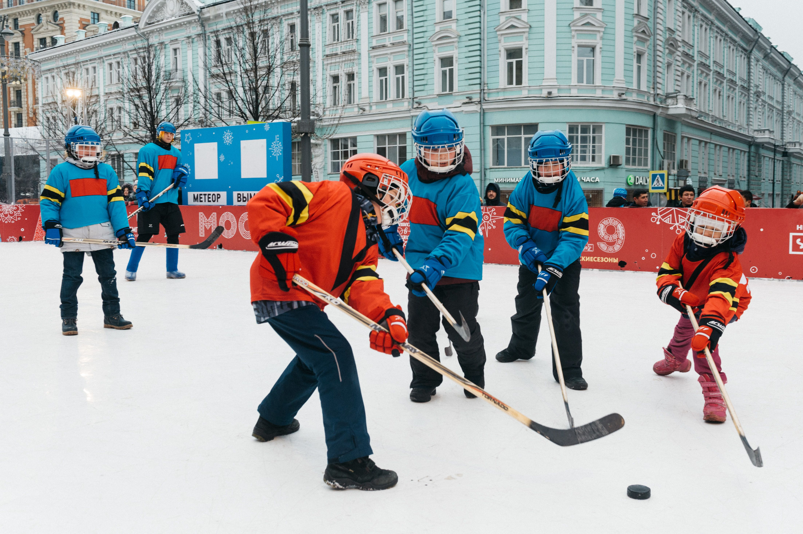
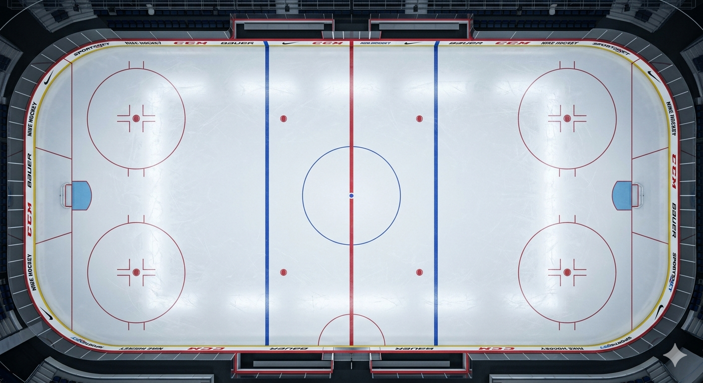

Puck, Rink, Ice Skates
Ice Hockey adalah olahraga tim yang dimainkan di atas permukaan es menggunakan sepatu skating dengan tujuan untuk memasukkan piringan karet hitam (puck) ke gawang lawan menggunakan tongkat pemukul (hockey stick).
Olahraga ini sangat terkenal dengan temponya yang sangat cepat, penuh benturan fisik secara legal, dan mengharuhankan koordinasi motorik tingkat tinggi karena setiap pemain wajib meluncur di atas es dengan kecepatan prima sambil mengendalikan arah laju puck.
Hoki es berakar dari permainan tradisional stik dan bola asal Eropa Utara seperti Hurling dan Shinty. Ketika para imigran dan tentara Inggris mendarat di Kanada, permainan ini berakulturasi dengan tradisi tangkas suku asli Amerika (Mi'kmaq) di atas permukaan danau yang membeku.
James Creighton memelopori pertandingan hoki es terstruktur kategori indoor pertama di Victoria Skating Rink, Montreal. Momen vital ini menandai pergantian bola bundar menjadi piringan karet ceper (puck) kayu agar tidak melambung keluar membahayakan penonton, sekaligus membatasi jumlah pemain menjadi 9 orang per tim.
Para mahasiswa dari Universitas McGill mengodifikasi tujuh aturan tertulis pertama yang menjadi landasan regulasi dunia. Di tahun ini pula klub hoki es pertama, McGill University Hockey Club, resmi didirikan dan mulai memperkenalkan sistem penalti untuk membatasi kekerasan fisik yang berlebihan di atas lapangan.
Setelah menyebar luas ke Amerika Serikat dan benua Eropa, hoki es mencapai puncak pengakuan global tertingginya dengan resmi dipertandingkan dalam ajang Olimpiade Musim Dingin Pertama di Chamonix, Prancis pada tahun 1924. Tim Kanada mendominasi era ini dan keluar sebagai peraih medali emas pertama sepanjang sejarah.
Masing-masing tim menurunkan 6 pemain sekaligus di arena (1 penjaga gawang dan 5 pemain posisi bertahan serta penyerang). Karena intensitas laga sangat tinggi, pergantian pemain diperbolehkan kapan saja secara instan (on-the-fly substitution).

Laga resmi dibagi menjadi 3 babak (period) yang masing-masing berjalan selama 20 menit waktu bersih. Waktu bersih berarti stopwatch atau penghitung waktu akan langsung berhenti otomatis setiap kali wasit meniup peluit tanda terjadinya pelanggaran.
